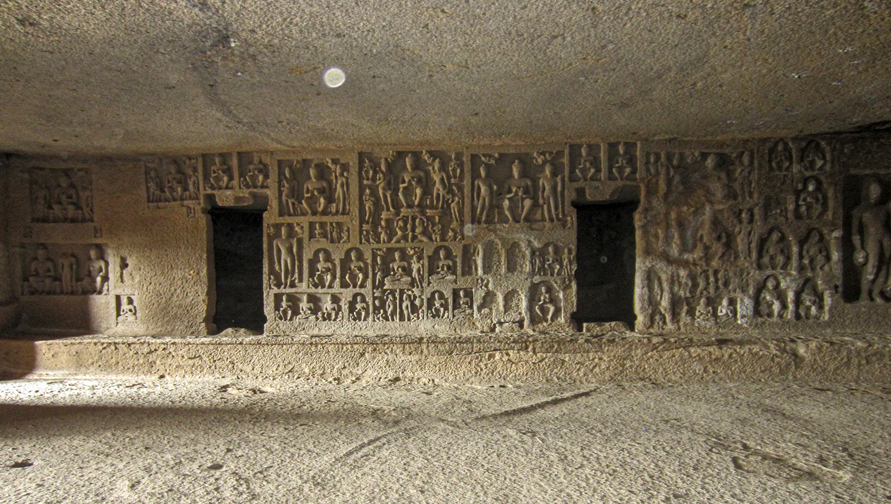
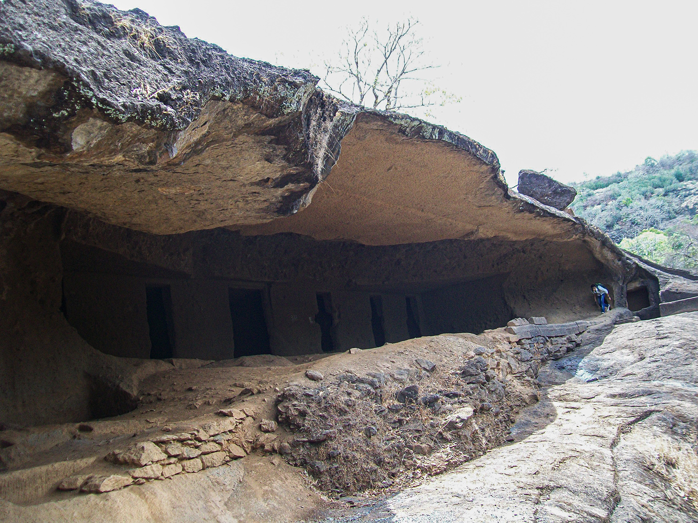

kanheri Caves - A Treasure Hosue of Buddhism History
Kanheri Caves are located in Borivali East in Mumbai City, a part of Rajiv Gandhi National Park. It was such a good experience.

Kanheri Caves is a one of the most beautiful place of Mumbai located in Borivali East. One side a full of crowd of people and no space for peace in the Mumbai city, and another side this kind of completely peaceful historical place.The beauty of this place are caves and you can see a part of a city from the top of this place as it is on very height. Good place to visit during the weekend for Mumbai people.
At Kanheri Caves, civilization during the Buddhism time can be seen over here. There are number of caves at this place and the interesting thing is actually these are not only caves but a whole township type of construction. At each part of the Kanheri hills, different kinds of construction are found which seems like constructed in a well manner which contains underground water storage part, meditation rooms, drawing room and two benches outside of a house.
All these can be found in each house but in a different manner as the house is in which part of this Buddhist township. And another interesting thing is there is a prayer hall, in Hindi which is called "POOJA KHAND" for daily prayer and meditation. This place not only contain caves but also greenery among the caves as it can be said one part of the Sanjay Gandhi National Park.
Remembering Tiananmen
As many as 180,000 people were expected to attend the candlelight vigil at Victoria Park in Hong Kong on June 4, the 30th anniversary of the Tiananmen Square massacre. Commemorations took place in cities around the world to remember those who died when Chinese troops cracked down on pro-democracy protesters. No one knows for sure how many people were killed as China continues to censor any coverage or discussion of the event that takes place during the anniversary.